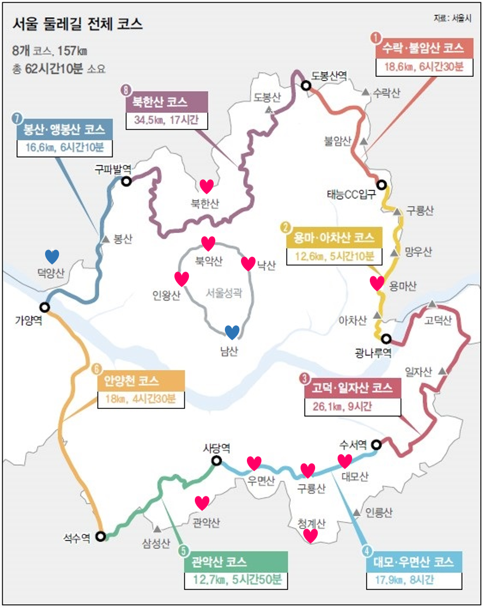
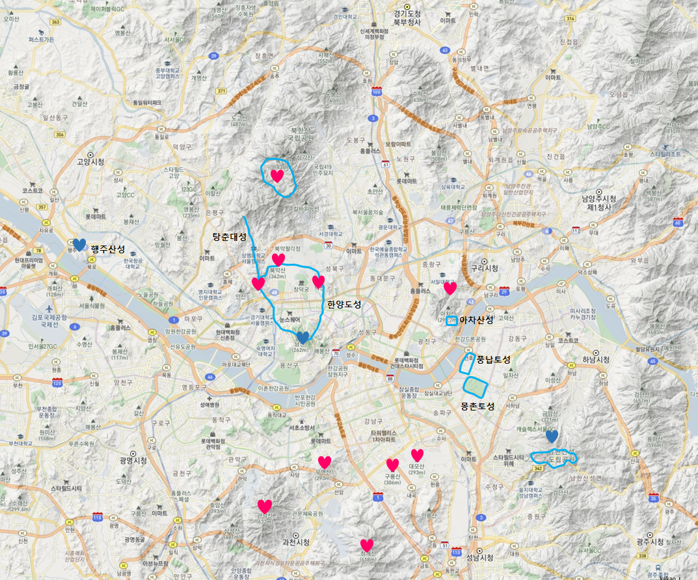
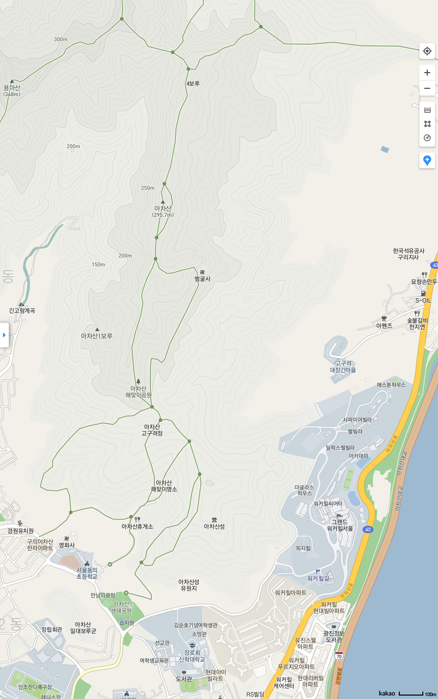

서울 둘레길의 산들



|
2021년 2월 13일 |
아차산(해발 287m): 생태공원, 아차산성, 고구려정, 해맞이공원, 아차산, 4보루, 범굴사, 고구려정, 영화사, (차량이동)고구려대장간 |
|
2014년 10월 4일 |
용마산(해발 348m): 사가정공원, 깔닥고개, 전망대, 사가정공원 |
|
2012년 03월 18일 |
우면산(해발 293m): 예술의전당-정상(소망탑)-예술의전당 |
|
2013년 09월 22일 |
구룡산(해발 306m): 구룡마을-구룡산-구룡마을 |
|
2013년 09월 08일 |
대모산(해발 293m): 일원지하차도-대모산-도선여객 |
느낀 점, 배운 것
- 대모산 하산길이 너무 혼란스럽다. 길을 잃었다.
- 구룡마을 앞이 개포 래미안 블래스티지이다.